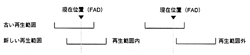

In the following operations, FAD is outside the playback range (FAD ＜start position, FAD＞ end position).
∙ Operation outside the playback range depends on whether there is repeat.
For example, when playback ends without repeat, the 〈PAUSE〉 state is entered with FAD = end position + 1, and the PEND flag is set to 1.
Table 4.5 Operation outside the playback range
Operation (command) | No repeat | repeat | ||
state | PEND | state | PEND | |
CD playback ends | FAD = end position + 1 〈PAUSE〉 | 1 | Seek to start position and 〈PLAY〉 | 0 |
CD playback Change playback range | 〈PAUSE〉 | |||
seek | 〈PAUSE〉 | 1 | 〈PAUSE〉 | 0 |
Scan playback | 〈PAUSE〉 | 1 | 〈PAUSE〉 | 0 |
PEND flag 0 means no change.